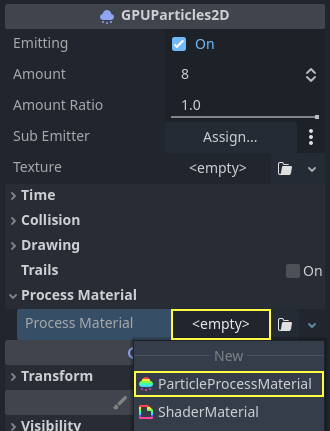
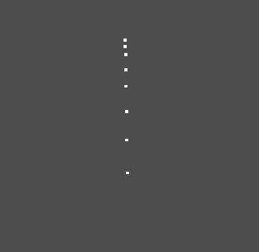
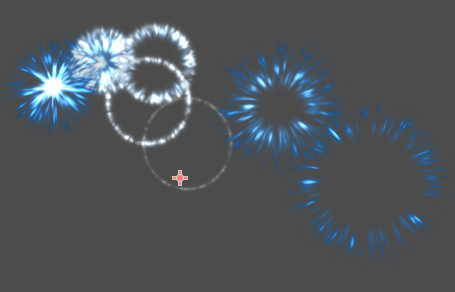
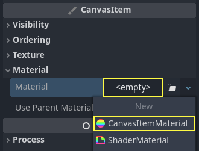
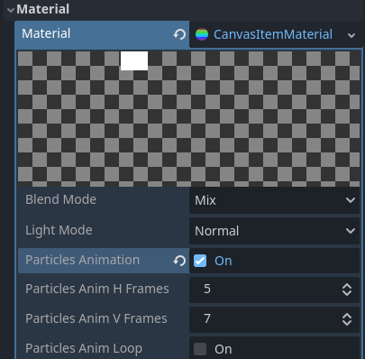
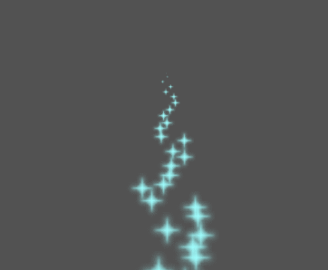
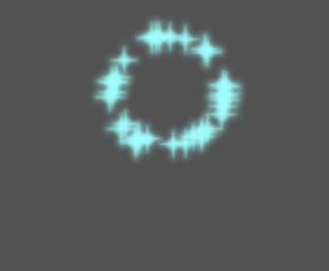
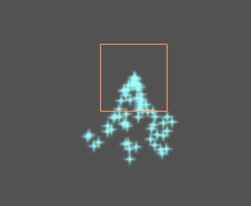
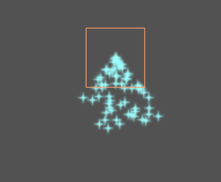

Đang cập nhật
Nội dung trang này chưa được cập nhật cho Godot
4.7
và có thể đã lỗi thời. Nếu bạn biết cách cải thiện trang này hoặc xác nhận
được rằng nó vẫn đúng, hãy gửi một pull request (bản tiếng Anh).
Hệ thống hạt 2D
Giới thiệu
Hệ thống hạt được dùng để mô phỏng các hiệu ứng vật lý phức tạp như tia lửa, lửa, hạt phép thuật, khói, sương mù, v.v.
Ý tưởng là một "hạt" được phát ra theo một khoảng thời gian cố định và có vòng đời cố định. Trong suốt vòng đời, mọi hạt đều có cùng một hành vi cơ bản. Điều khiến mỗi hạt khác biệt với phần còn lại và mang lại vẻ tự nhiên hơn là "tính ngẫu nhiên" gắn với từng tham số. Về bản chất, tạo một hệ thống hạt nghĩa là đặt các tham số vật lý cơ bản rồi thêm tính ngẫu nhiên vào chúng.
Các node hạt
Godot cung cấp hai node khác nhau cho hạt 2D là class_GPUParticles2D và class_CPUParticles2D. GPUParticles2D nâng cao hơn và dùng GPU để xử lý hiệu ứng hạt. CPUParticles2D là lựa chọn chạy bằng CPU với tính năng gần tương đương GPUParticles2D, nhưng hiệu năng thấp hơn khi dùng số lượng hạt lớn. Mặt khác, CPUParticles2D có thể chạy tốt hơn trên các hệ thống cấu hình thấp hoặc trong tình huống bị nghẽn ở GPU.
Trong khi GPUParticles2D được cấu hình qua một class_ParticleProcessMaterial (và tùy chọn kèm một shader tùy chỉnh), các tùy chọn tương ứng trong CPUParticles2D được cung cấp qua các thuộc tính của node (ngoại trừ các cài đặt trail).
Về sau sẽ không có kế hoạch thêm tính năng mới cho CPUParticles2D, mặc dù các pull request bổ sung những tính năng đã có trong GPUParticles2D vẫn sẽ được chấp nhận. Vì lý do đó, chúng tôi khuyên dùng GPUParticles2D trừ khi bạn có lý do rõ ràng để không dùng.
Bạn có thể chuyển node CPUParticles2D thành node GPUParticles2D bằng cách nhấp vào node trong cây scene, chọn không gian làm việc 2D và chọn CPUParticles2D > Convert to GPUParticles2D trên thanh công cụ.

Cũng có thể chuyển node GPUParticles2D thành node CPUParticles2D, tuy nhiên có thể phát sinh vấn đề nếu bạn dùng các tính năng chỉ có trên GPU.
Phần còn lại của bài hướng dẫn này sẽ dùng node GPUParticles2D. Trước tiên, hãy thêm một node GPUParticles2D vào scene. Sau khi tạo node đó, bạn sẽ thấy chỉ có một chấm trắng được tạo ra, và có một biểu tượng cảnh báo bên cạnh node GPUParticles2D trong Scene dock. Đó là vì node cần một ParticleProcessMaterial để hoạt động.
ParticleProcessMaterial
Để thêm process material cho node hạt, hãy vào Process Material trong bảng Inspector. Nhấp vào ô bên cạnh Material và chọn New ParticleProcessMaterial từ menu thả xuống.

Giờ node GPUParticles2D của bạn sẽ phát ra các điểm trắng hướng xuống dưới.

Texture
Một hệ thống hạt có thể dùng một texture đơn hoặc một flipbook hoạt ảnh. Flipbook là một texture chứa nhiều frame hoạt ảnh có thể được phát lần lượt, hoặc được chọn ngẫu nhiên khi phát ra. Nó tương đương với spritesheet dành cho hạt.
Texture được đặt qua thuộc tính Texture:

Sử dụng flipbook hoạt ảnh
Flipbook của hạt phù hợp để tái hiện các hiệu ứng phức tạp như khói, lửa, vụ nổ. Chúng cũng có thể được dùng để tạo biến thể texture ngẫu nhiên, bằng cách cho mỗi hạt dùng một texture khác nhau. Bạn có thể tìm các hình flipbook hạt có sẵn trên mạng, hoặc render trước chúng bằng các công cụ bên ngoài như Blender hoặc EmberGen.

Ví dụ về một hệ thống hạt dùng texture flipbook
Dùng flipbook hoạt ảnh cần cấu hình nhiều hơn so với một texture đơn. Để minh họa, chúng ta sẽ dùng texture này với 5 cột và 7 hàng (nhấp chuột phải và chọn Save as…):

Nguồn: JoesAlotofthings (CC BY 4.0)
Để dùng flipbook hoạt ảnh, bạn phải tạo một CanvasItemMaterial mới trong mục Material của node GPUParticles2D (hoặc CPUParticles2D):

Tạo CanvasItemMaterial ở cuối Inspector của node hạt
Trong CanvasItemMaterial này, hãy bật Particle Animation và đặt H Frames và V Frames bằng số cột và số hàng có trong texture flipbook của bạn:

Cấu hình CanvasItemMaterial cho texture flipbook ví dụ
Khi đã làm xong, mục Animation trong ParticleProcessMaterial (với GPUParticles2D) hoặc trong Inspector của CPUParticles2D sẽ có tác dụng.
Mẹo
Nếu texture flipbook của bạn có nền đen thay vì nền trong suốt, bạn cũng cần đặt blend mode thành Add thay vì Mix để hiển thị đúng. Ngoài ra, bạn có thể sửa texture để có nền trong suốt bằng một trình chỉnh sửa ảnh. Trong GIMP, có thể làm việc này bằng menu Color > Color to Alpha.
Tham số thời gian
Lifetime
Thời gian tính bằng giây mà mỗi hạt tồn tại. Khi vòng đời kết thúc, một hạt mới sẽ được tạo ra để thay thế.
Lifetime: 0.5

Lifetime: 4.0

One Shot
Khi bật, node GPUParticles2D sẽ phát ra tất cả các hạt của nó một lần rồi không bao giờ phát lại nữa.
Preprocess
Hệ thống hạt bắt đầu với 0 hạt được phát ra, rồi mới bắt đầu phát. Điều này có thể gây bất tiện khi nạp một scene có các hệ thống như ngọn đuốc, sương mù, v.v. bắt đầu phát ngay khi bạn vào. Preprocess được dùng để hệ thống xử lý trước một số giây nhất định trước khi thực sự được vẽ lần đầu tiên.
Speed Scale
Speed scale có giá trị mặc định là 1 và được dùng để điều chỉnh tốc độ của hệ thống hạt. Giảm giá trị sẽ làm các hạt chậm hơn, còn tăng giá trị sẽ làm các hạt nhanh hơn nhiều.
Explosiveness
Nếu lifetime là 1 và có 10 hạt, nghĩa là cứ 0.1 giây một hạt sẽ được phát ra. Tham số explosiveness thay đổi điều này và buộc các hạt được phát ra cùng lúc. Các giá trị là:
0: Phát hạt theo các khoảng đều đặn (giá trị mặc định).
1: Phát tất cả các hạt đồng thời.
Các giá trị ở giữa cũng được cho phép. Tính năng này hữu ích để tạo vụ nổ hoặc các đợt bùng phát hạt đột ngột:

Randomness
Tất cả các tham số vật lý đều có thể được ngẫu nhiên hóa. Giá trị ngẫu nhiên nằm trong khoảng từ 0 đến 1. Công thức để ngẫu nhiên hóa một tham số là:
initial_value = param_value + param_value * randomness
Fixed FPS
Cài đặt này có thể được dùng để hệ thống hạt kết xuất ở một FPS cố định. Ví dụ, đổi giá trị thành 2 sẽ làm các hạt kết xuất ở 2 khung hình mỗi giây. Lưu ý rằng điều này không làm chậm bản thân hệ thống hạt.
Ghi chú
Godot 4.3 hiện chưa hỗ trợ physics interpolation cho hạt 2D. Để khắc phục tạm thời, hãy tắt physics interpolation cho node hạt bằng cách đặt Node > Physics Interpolation > Mode ở cuối Inspector.
Fract Delta
Đặt Fract Delta thành true sẽ dùng phép tính delta phân số, giúp hiệu ứng hiển thị hạt mượt hơn. Độ mượt tăng lên này đến từ độ chính xác cao hơn. Sự khác biệt dễ nhận thấy hơn trong các hệ thống có độ ngẫu nhiên cao hoặc hạt di chuyển nhanh. Nó giúp duy trì tính nhất quán hình ảnh của hệ thống hạt, đảm bảo chuyển động của mỗi hạt khớp với vòng đời thực tế của nó. Nếu không có nó, các hạt có thể trông như bị nhảy hoặc di chuyển nhiều hơn mức cần thiết trong một frame nếu chúng được phát ra tại một thời điểm giữa frame. Độ chính xác cao hơn đánh đổi bằng hiệu năng, đặc biệt trong các hệ thống có số lượng hạt lớn.
Tham số vẽ
Visibility Rect
Hình chữ nhật hiển thị điều khiển khả năng hiển thị của các hạt trên màn hình. Nếu hình chữ nhật này nằm ngoài viewport, engine sẽ không kết xuất các hạt lên màn hình.
Các thuộc tính W và H của hình chữ nhật lần lượt điều khiển chiều rộng và chiều cao. Các thuộc tính X và Y điều khiển vị trí góc trên bên trái của hình chữ nhật, tương đối so với bộ phát hạt.
Bạn có thể để Godot tự động tạo Visibility Rect bằng thanh công cụ phía trên view 2D. Để làm vậy, chọn node GPUParticles2D và nhấp Particles > Generate Visibility Rect. Godot sẽ mô phỏng node Particles2D phát hạt trong vài giây và đặt hình chữ nhật vừa với vùng mà các hạt chiếm.
Bạn có thể điều khiển thời lượng phát bằng tùy chọn Generation Time (sec). Giá trị tối đa là 25 giây. Nếu cần thêm thời gian để các hạt di chuyển, bạn có thể tạm thời thay đổi thời lượng preprocess trên node Particles2D.
Local Coords
Mặc định, tùy chọn này tắt. Nghĩa là không gian mà các hạt được phát vào là toàn cục, và không tương đối với node. Nếu node di chuyển, các hạt đã có sẽ không di chuyển theo:

Nếu bật, các hạt sẽ được phát vào không gian cục bộ, nghĩa là nếu node di chuyển, các hạt đã phát ra cũng bị ảnh hưởng:

Draw Order
Tùy chọn này điều khiển thứ tự vẽ từng hạt. Index nghĩa là các hạt được vẽ theo thứ tự phát ra (mặc định). Lifetime nghĩa là chúng được vẽ theo thứ tự vòng đời còn lại.
Cài đặt Particle Process Material
Để biết thông tin về các cài đặt trong ParticleProcessMaterial, hãy xem trang này.